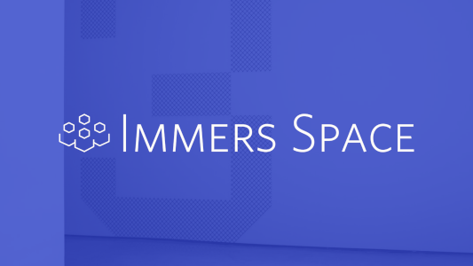

immers-client
Client library to connect with Immers servers and Immers Space accounts from the Immersive Web. Using the Immers Client, you can enhance your site with social features and let your users share your site with their friends. Immers Space is a decentralized and federated social network, so you're not casting in with any one company or community; you're enabling users from any number of communities to bring their accounts, identities, and friends with them to your Immersive Web experience. Check out our FAQ for Immersive Web content creators.
View the full API documentation at https://immers-space.github.io/immers-client
Features
| Feature | Description |
|---|---|
| Promote your site | Immersers share your site with their friends when they login |
| Customized user experience | Profiles give you an immerser's preferred display name, profile picture, and avatar glTF to optionally integrate into your experience |
| Make it memorable | Offer immersers collectible avatars they can add to their profiles and show off on other immers |
| Easy to use | High-level APIs abstract away the complex details of ActivityPub and federated social networks |
| Social login without tracking | No tracking cookies, no tracking pixels, all resources inlined, and no network requests until a user opts to log in |
| Lightweight | Tree-shakable, few dependencies, 100 Kb bundle |
How to participate in Immers Space
Immers Space is an interconnected network of Immersive Web experiences and communities of the immersers who use them. The easiest way to join is to be a destination - a site that allows immersers to bring their own accounts and identities. You can become an Immers Space destination just by including the "one-liner" script tag on your page.
You could also choose to be a full immer - an Immersive Web experience that hosts its own community of immersers - by running the free software Immers Server alongside your WebXR project. As an immer, you would host the user accounts for your community of immersers, and they could use those accounts anywhere in the Immers Space metaverse, helping to spread awareness of your site.
High-level APIs
Immers Space is based on the ActivityPub W3C standard for federated social media, but you don't need to know any of the details of activity streams to use Immers Space with our high-level APIs
The one-liner
You can add the ability for users to login with their Immers Space accounts and invite their friends to visit your site with just a single line of code. See this live on our documentation pages.
<script type="module" src="https://unpkg.com/immers-client/dist/destination.bundle.js"></script>
This will add the <immers-hud> Web Component floating on the bottom left of your page,
giving users a GUI to login to their account which will then share your page with all
of their friends. You can also customize it by adding the following query parameters
to the end of the script src.
| Query Parameter | Description | Default |
|---|---|---|
| position | Overlay position, one of bottom-left, top-left, bottom-right, top-right, none |
bottom-left |
| title | Name of your site to use when sharing | document.title |
| role | Level of access to request (user can change before accepting, one of public, friends, modAdditive, modFull |
friends |
| save | Should user identity be preserved for easier reconnection on next visit? (It's up to you to request user consent if required) true/false |
false |
If you do not want the <immers-hud> element to be automatically injected,
you can add your own <immers-hud> anywhere in the document or set the position to none.
immers-hud Web Component
Adds an unobtrusive, 32px square icon than can be clicked to open a small GUI that allows for OAuth2 authorization with any Immers Server via a pop-up window. Once connected, you'll have access to the users's profile to customize your experience with their preferred identity and all of their friends will be sent a link to your site.
ImmersClient class
Connect to user accounts from any Immers Server to access user profiles and enable social features.
Low-level APIs
For advanced work, you can dip down into the low-level APIs and start crafting and sending your own activities
Activities
Create and retrieve Activities, the unit of communication in federated social networks
ImmersSocket
Live streaming updates from a users home server let them know when friends come online or send messages.
State of this library
This library is under active development, the current functionality allows users to login
to destinations and see a live count of how many of their friends are online.
You will be able to access their
profile to get display name and preferred avatar (image and gltf). Additional features
like metaverse-wide chat and collectible avatars are available in the low-level APIs
but not yet integrated into the high-level APIs or the <immers-hud> GUI.
High-level APIs are well-documented, but some documentation is incomplete in the low-level APIs.
Compatibility
For login on destination-only sites, users' home Immer must be running Immers Server v1.3.1 or later